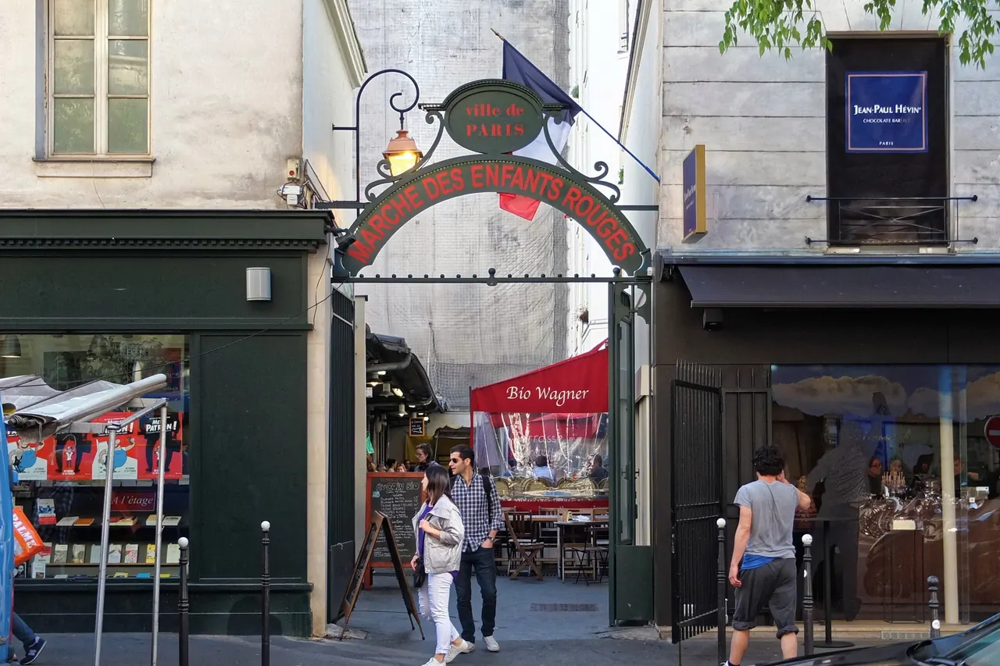
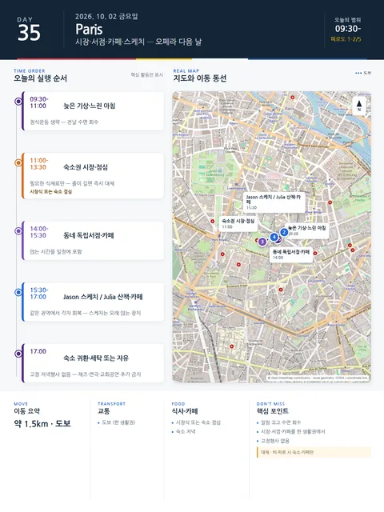

Day 35 · 10/2 금 · Paris

- 핵심 실행
- 회복·시장·서점·스케치
- 권장 출발
- 늦은 시작
- 완충
- 정식운동 생략
- 예약
- 이 날짜로 잡힌 예약 없음 · 현황
시간표
| 시간 | 일정 | 실행 포인트 |
|---|---|---|
| 09:30–10:30 | 늦은 기상·느린 아침 | 정식운동 생략 |
| 11:00–12:00 | 숙소권 시장 | 필요한 식재료만 구매 |
| 12:00–13:30 | 시장식 또는 숙소 점심 | 줄이 길면 즉시 대체 |
| 14:00–15:30 | 동네 독립서점·카페 | 앉는 시간을 일정에 포함 |
| 15:30–17:00 | Jason 스케치 / Julia 산책·카페 | 같은 권역에서 각자 회복 |
| 17:00 이후 | 숙소 귀환·세탁 또는 자유 | 고정 저녁행사 없음 |
| 14:00–16:00 | Grand Palais — Cezanne et nous | Cezanne et nous 2026/9/23–2027/1/17 갤러리 3·4 · 174점(세잔 69 + 타 작가 105) · 예약 2026-07-07 개시 · Aix 에서 본 작업실·풍경의 결과물을 본다 |
피로도
1–2/5
이 날의 장소
일자별 시간표와 본문 표기에서 찾은 것이다. 하루의 전부가 아니라 장소 카드가 있는 것만 담는다.
이 날의 메모
시장, 서점, 카페, 스케치 — 오페라 다음 날의 회복 회복 로컬 라이프
회복과 생활 자체가 목적이므로 재즈·연극·교회공연을 추가하지 않는다.
꼭 해볼 것
- 오전 알람을 끄고 전날 수면을 회수한다.
- 시장·서점·카페를 모두 숙소에서 가까운 한 생활권 안에서 고른다.
- 스케치는 결과물보다 한 자리에 오래 앉아 쉬는 장치로 쓴다.
상세 실행 확인
- 최고 리스크
- 회복일 과밀화
- 우선 삭제
- 저녁행사 전부
- 대체안
- 숙소·카페만
- 식사·휴식
- 시장식 또는 숙소 점심
- 잠금 필요
- 없음
Google 실행지도
생활일 — 숙소권 시장·서점·회복
지도 펼치기
지도는 펼칠 때만 불러옵니다.
구간별 길찾기
Daily Action Map

실제 좌표와 OpenStreetMap을 사용한 실행용 요약입니다. 도로·대중교통 상황은 출발 직전에 다시 확인하세요.